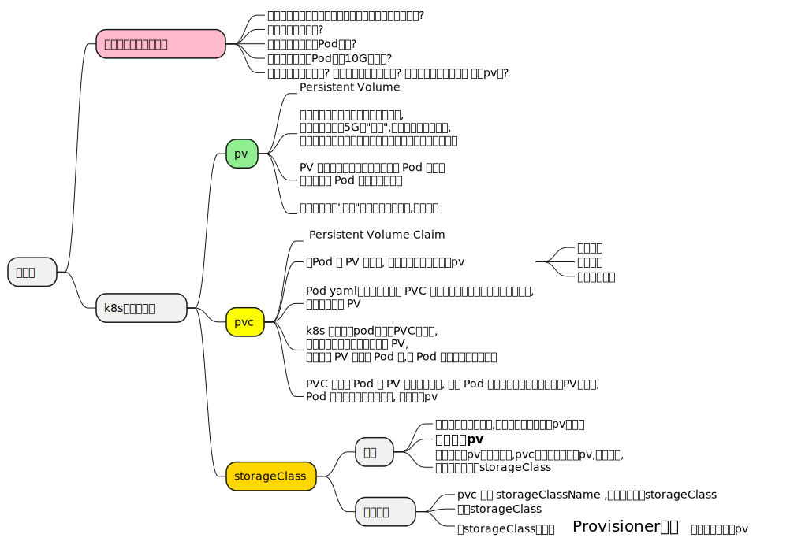

1 卷挂载
Tip
- 容器中的磁盘文件是短暂的,{==容器重启后==},会以最干净的状态启动,之前的文件就会丢失
- 一个pod里有多个容器,可能需要共享一些文件的情况
- 数据需要持久化的情况
kubectl explain pod.spec.volumes
# 注意这个是 pod的
kubectl explain pod.spec.volumes.emptyDir
# 定义完 pod的后,我们需要定义pod中容器的 volume mount
kubectl explain pod.spec.containers.volumeMounts1.1 emptyDir
Tip
- 当 Pod 因为某些原因被从节点上删除时，emptyDir 卷中的数据也会被永久删除
- 容器崩溃重启并不会导致 Pod 被从节点上移除，因此容器崩溃期间 emptyDir 卷中的数据是安全
- 实际是将节点上的目录挂载到 Pod 中的不同容器的不同或相同位置,所以他们可以共享数据,因为实际读的是节点上的目录
# 创建一个pod ,里面有2个容器,一个写入数据到index.html
# 一个读取
apiVersion: v1
kind: Pod
metadata:
name: pod-vol-empty-dir
# namespace: test
spec:
volumes:
- name: html
emptyDir: {}
#emptyDir:
# medium: Memory
containers: # 这里配置了2个容器,挂载到自己容器里不同的目录
- name: nginx-c
image: nginx:1.12-alpine
volumeMounts:
- name: html # 这个必须是上面定义的volumes中的name
mountPath: /usr/share/nginx/html # 挂载到容器里的哪个目录
- name: make-page-c
image: alpine
volumeMounts:
- name: html
mountPath: /html # 挂载到不同的目录
command: ["/bin/sh", "-c"]
args:
- while true; do
echo $(hostname) $(date) >> /html/index.html;
sleep 10;
done查看卷在节点中的位置
k get po -o wide # 先看在哪个节点
k get po pod-vol-empty-dir -o yaml
uid: 8c809c4c-6b74-4088-b416-d7dd11743cdb
# 去对应的节点上
cd /var/lib/kubelet/pods/8c809c4c-6b74-4088-b416-d7dd11743cdb
tree -L 2
.
├── containers
│ ├── make-page-c
│ └── nginx-c
├── etc-hosts
├── plugins
│ └── kubernetes.io~empty-dir
└── volumes
├── kubernetes.io~empty-dir
└── kubernetes.io~projected
tree volumes/kubernetes.io~empty-dir
volumes/kubernetes.io~empty-dir
└── html
└── index.html
# 在 这个节点上的html目录增加文件, 2个容器都能看到1.2 hostPath
Tip
将主机节点文件系统上的文件或目录挂载到你的 Pod 中
1.3 nfs
Tip
nfs 卷能将 NFS (网络文件系统) 挂载到你的 Pod 中。 不像 emptyDir 那样会在删除 Pod 的同时也会被删除，nfs 卷的内容在删除 Pod 时会被保存，卷只是被卸载。 这意味着 nfs 卷可以被预先填充数据，并且这些数据可以在 Pod 之间共享
服务端安装
#在一台主机上安装 ,这里我们直接用一个节点来. (当然如果你服务器多.就用一个新的.)
# 这里我们用node1节点
yum install nfs-utils rpcbind -y
systemctl start nfs-server
# 查看当前nf服务所支持的版本
cat /proc/fs/nfsd/versions
# 1. 创建一个你要共享的目录
mkdir -p /data/nfs
chown 755 /data/nfs
#nfsnobody 安装启动nfs服务后有的一个用户
chown -R nfsnobody.nfsnobody /data/nfs
systemctl start nfs
systemctl start rpcbind
# *号 位可以设置成ip段 192.168.124.0/24 表示这些ip段的才可以访问
echo "/data/nfs *(rw,sync,no_subtree_check,no_root_squash)" >> /etc/exports
# 这个不行...
#echo "/data/nfs *(rw,sync,all_squash)" >> /etc/exports
exportfs -r # 更新配置,重新读取配置
exportfs #显示共享了哪些目录
systemctl restart nfs
systemctl restart rpcbind
echo "hello" > /data/nfs/index.html其他节点上挂载
pod-vol-nfs.yaml
1.4 downwardAPI
2 投射卷
3 pv pvc
3.1 概念

Tip
- 一个pod 可以关联多个pvc, 一个pvc 只能绑定一个pv, 一个pv 可以被多个pvc 绑定
3.2 创建pv
pv-nfs-1.yaml
- 1
- 容量配置,并不是说你设置多少,就只能给这么多, 这需要你的后端存储的支持
- 2
- Gi表示以1024 来算的, 如果写5G表示以1000来算
- 3
- 该PV的访问模式, ReadWriteMany(表示可以被多个node节点读写,有些支持,有些不支持) ReadWriteOnce 等
- 4
- pv的类型,多个不同的pv可以有相同的类型,用于PVC 想要绑定什么类型的pv,pvc设置的时候也有这个字段,写上它想要的pv类型
- 5
- pv回收策略
- 6
- pv 申请的空间从哪里来
- 7
- NFS上的共享目录
- 8
- NFS的IP地址
- 9
- 卷的模式, 目前支持Filesystem(文件系统)和Block(块),其中Block类型需要后端存储支持,默认为文件系统
| 策略 | 描述 |
|---|---|
| Retain | 默认就是Retain,就是说删除pvc的时候,他绑定的pv保留,数据也保留 |
| Recycle | 表示pv里数据删除,但是pv还是保留的. k8s会创建一个pod .里面有rm 命令 来进行对数据删除 |
| delete | 删除pvc时, 同时删除pv (deprecated: 表示强烈的不推荐) |
| pv 的STATUS | 描述 |
|---|---|
| Available | 可用，没有被PVC绑定的空闲资源 |
| Bound | 已绑定，已经被PVC绑定 |
| Released | 已释放，PVC被删除，但是资源还未被重新使用 |
| Failed | 失败，自动回收失败 |
3.3 创建pvc
pvc-nfs-1.yaml
- 1
- 注意 这个要与 pv一致
- 2
- 对应的pv 必须大于等于这个大小
- 3
- 标签过滤选择哪个 pv,也可以不用写,这样pvc选择的时候可能就是看需要的容量了
# pvc 的状态 Bound
k get pvc
# 可以看到 pvc对象的volumeName字段 设置为了pv的名字pv-nfs-1,这就是表示pvc绑定了pv
k get pvc pvc-nfs-1 -o yaml |grep volumeName
# pv 的状态变成Bound, CLAIM 显示成 pvc的name
k get pv
NAME CAPACITY ACCESS MODES RECLAIM POLICY STATUS CLAIM STORAGECLASS REASON AGE
pv-nfs-1 100Mi RWX Retain Bound default/pvc-nfs-1 101s3.4 创建pod绑定pvc
3.5 storageClass
Tip
storageClass 没有命名空间一说.
只能有一个默认的 sc, 如果设置多个, 那么创建pvc 未指定 storageClassName 会报错 Internal error occurred: 2 default StorageClasses were found
我们前面创建时没有指定storageClassName ,实际上会设置为默认的那个sc. 除非你设置为 “” 空字符串
下面的显示是举个例子, 默认的会显示 (default)
apiVersion: storage.k8s.io/v1
kind: StorageClass
metadata:
name: example-nfs
provisioner: example.com/external-nfs
parameters:
server: nfs-server.example.com
path: /share
readOnly: "false"# 正常情况下你要创建一个能用的 sc, provisioner 要有,这里我做个测试.
# 创建完比后, 设置为默认
k annotate sc example-nfs storageclass.kubernetes.io/is-default-class=truepvc-nfs-2.yaml
k create -f pvc-nfs-2.yaml
k get pvc #发现是pending 状态
# storageClassName: example-nfs pv的storageClassName已经被设置为默认的了.
# 因为这个 sc 不ok, 所以没有动态创建pv
k get pvc pvc-nfs-2 -o yaml pv-2.yaml
创建这个pv后, 我们发现上面的 pvc 与pv 绑定了, 说明有这个storageClassName的pv 的应该优先级更高
3.5.1 nfs
helm repo add nfs-subdir-external-provisioner https://kubernetes-sigs.github.io/nfs-subdir-external-provisioner/
# 先 pull 看是否能下载下来, / 左边是 上面添加的repo名
helm pull nfs-subdir-external-provisioner/nfs-subdir-external-provisioner
# 会在当前目录下 看到 下载的文件 nfs-subdir-external-provisioner-4.0.18.tgz
tar xf nfs-subdir-external-provisioner-4.0.18.tgz
cd nfs-subdir-external-provisioner
tree
.
├── Chart.yaml
├── ci
│ └── test-values.yaml
├── README.md
├── templates
│ ├── clusterrolebinding.yaml
│ ├── clusterrole.yaml
│ ├── deployment.yaml
│ ├── _helpers.tpl
│ ├── persistentvolumeclaim.yaml
│ ├── persistentvolume.yaml
│ ├── poddisruptionbudget.yaml
│ ├── podsecuritypolicy.yaml
│ ├── rolebinding.yaml
│ ├── role.yaml
│ ├── serviceaccount.yaml
│ └── storageclass.yaml
└── values.yaml #修改这个文件
自己构建nfs-subdir-external-provisioner镜像
value.yaml 部分要修改的内容
replicaCount: 1
strategyType: Recreate
image:
1 repository: registry.cn-hangzhou.aliyuncs.com/your-namespace/nfs-subdir-external-provisioner
2 tag: v4.0.18
pullPolicy: IfNotPresent
imagePullSecrets: [
3 {"name":"regcred"}
]
nfs:
server: 192.168.66.110
path: /data/nfs
mountOptions:
volumeName: nfs-subdir-external-provisioner-root
# Reclaim policy for the main nfs volume
reclaimPolicy: Retain- 1
- 自己构建的镜像地址
- 2
- 镜像版本
- 3
- docker login aliyun 后创建的secret 名
# 上面使用了自己的aliyun 镜像仓库
docker login --username=your-name registry.cn-hangzhou.aliyuncs.com
kubectl create secret generic regcred \
--from-file=.dockerconfigjson=/root/.docker/config.json \
--type=kubernetes.io/dockerconfigjson \
--namespace=kube-system# 安装
helm install nfs-subdir-external-provisioner . -n kube-system --debug
# 查看
ks get po
nfs-subdir-external-provisioner-6db4fd89d9-nwqfv 1/1 Running 0 17h
helm list -A
k get sc
k get sc nfs-client -o yaml #(1)storageClass 的yaml 里provisioner, 可以这样获取
allowVolumeExpansion: true
apiVersion: storage.k8s.io/v1
kind: StorageClass
metadata:
annotations:
meta.helm.sh/release-name: nfs-subdir-external-provisioner
meta.helm.sh/release-namespace: kube-system
creationTimestamp: "2023-07-19T08:37:44Z"
labels:
app: nfs-subdir-external-provisioner
app.kubernetes.io/managed-by: Helm
chart: nfs-subdir-external-provisioner-4.0.18
heritage: Helm
release: nfs-subdir-external-provisioner
name: nfs-client
resourceVersion: "1055715"
uid: 5ae9beff-7646-4022-8acc-52396ea9723b
parameters:
archiveOnDelete: "true"
provisioner: cluster.local/nfs-subdir-external-provisioner
reclaimPolicy: Deletepod-pvc-with-sc.yaml
apiVersion: v1
kind: PersistentVolumeClaim
metadata:
name: pvc-nfs-with-sc
spec:
accessModes:
- ReadWriteMany
volumeMode: Filesystem
resources:
requests:
storage: 200Mi
1 storageClassName: nfs-client
---
apiVersion: v1
kind: Pod
metadata:
name: pod-pv-pvc-with-sc
spec:
containers:
- name: nginx
image: nginx:1.14.2
volumeMounts:
- name: ng-data
mountPath: /usr/share/nginx/html
volumes:
- name: ng-data
persistentVolumeClaim: # 指定pvc的name
claimName: pvc-nfs-with-sc- 1
-
前面已经自动创建了sc, 当然我们可以自己手动创建一个.
利用这个sc对应的provisioner组件自动创建pv
还有如果没有指定的sc不存在, 那么它会找对应pv,会与有设置这个storageClassName的pv进行绑定
3.6 问题
3.6.1 pvc 处于pending
- PVC的空间申请大小大于PV的大小
- PVC的StorageClassName没有和PV的一致
- PVC的accessModes和PV的不一致
3.6.2 挂载PVC的Pod一直处于Pending
- PVC没有创建成功/PVC不存在
- PVC和Pod不在同一个Namespace